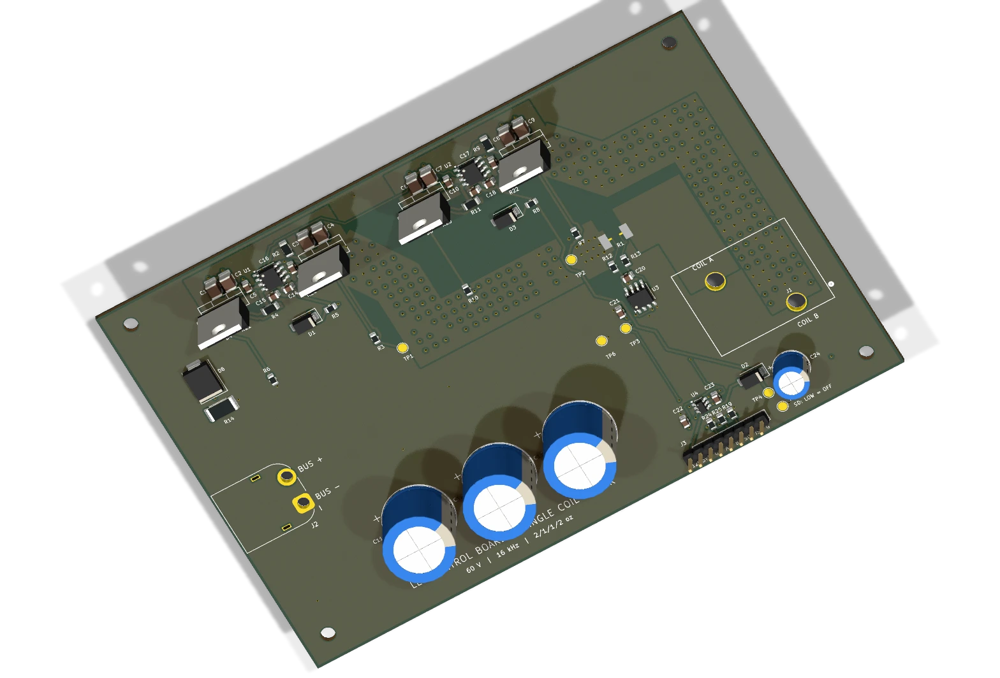

A 60 V H-bridge for reversible coil drive, with bidirectional current feedback for the pod’s hybrid suspension.
UT AUSTIN · ELECTRICAL & COMPUTER ENGINEERING
From circuits
to working
systems.
I’m Lloyd, an electrical engineering student building power electronics, custom PCBs, and robots that bring hardware and control together.
Explore my work ↓View résumé ↗BASED IN AUSTIN, TXUT ECE / CLASS OF 2029
ON THE BENCH / 001+

60 V H-BRIDGE
Bidirectional coil control
Bidirectional coil control
TEXAS GUADALOOP
Levitation control PCB
Power electronics / PCB design
POWER ELECTRONICS+PCB DESIGN+EMBEDDED SYSTEMS+ROBOTICS
01 / SELECTED WORK
Built with purpose.
Designed in detail.
A closer look at the circuits, decisions,
and systems behind my projects.
SELECT A PROJECT TO EXPLORE ↗
A team-built robot that navigates mazes, responds to color cues, and launches balls—with autonomous and manual control.
A synchronous converter designed to bring a 36–72 V input down to a common 24 V supply across four auxiliary branches.
Isolated sensing for a 600 V bus, paired with analog threshold detection and an external flashing warning light.
ALSO ON THE WORKBENCH
Buck converter prototype
From LTspice simulation to a fabricated PCB: component sizing, ripple, losses, and DC power delivery.
ROBOTATHON / FALL 2025 / TEAM BUILD
HARDWARE MEETS THE REAL WORLD
A little wood.
A lot of wiring.
One working robot.
There’s a different kind of satisfaction in watching a system move. At Robotathon, our team brought sensors, control, and a servo launcher together in one autonomous machine.
2nd
OUT OF 10 TEAMS
100%
TARGET ACCURACY
02 / THE ENGINEER BEHIND THE BOARDS
Curious by nature.
Hands-on by choice.
I’m pursuing a B.S. in Electrical & Computer Engineering at The University of Texas at Austin, with a focus on Electronics and Integrated Circuits.
At Texas Guadaloop, I work on power electronics and electrical integration—from high-voltage architecture to the low-voltage connections that bring the pod’s subsystems together. I also help coordinate procurement across the team.
Away from the bench: swimming, photography, computer building, and Filipino cuisine.
Get the full résumé ↗EDUCATIONThe University of
The University of
Texas at Austin
B.S. Electrical & Computer EngineeringExpected May 2029
3.91 GPATOOLS I WORK WITH
- Design & simulation
- KiCad · Altium · LTspice · Revit
- Code & hardware
- C · C++ · Python · Verilog
Assembly · ARM · x86 - Build & integrate
- PCB prototyping · Laser cutting
Power distribution · Robotics
03 / LET’S CONNECT
Have something
worth building?
I’d love to talk engineering, hands-on projects, and opportunities to learn.